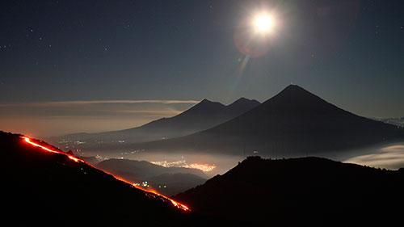
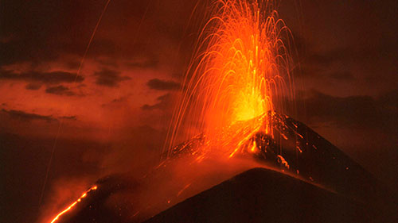
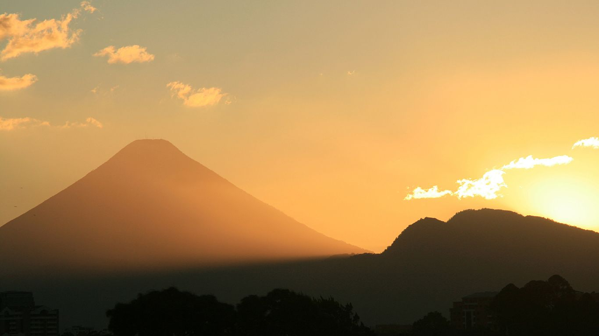

В данном разделе находятся все вулканы этой страны на нашем сайте.
Вулкан Пакайя вдоль тихоокеанского побережья Гватемалы

Среди действующих и активных вулканов не только Центральной Америки, но и всей планеты ведущую позицию
занимает гватемальский вулкан Пакайя. Он входит в череду вулканов разбросанных по всей горной местности,
расположенной вдоль тихоокеанского побережья Гватемалы – страны вулканов, как ее еще называют. Самой
красивой частью этой страны являются окрестности города Антигуа, который буквально окружен вулканами.
Ближе всех к городу находится вулкан Пакайя. От столицы страны – города Гватемала его отделяет 30 км.
Пакайя – вулканический комплекс, содержащий три старых вершины: Серро Chino (2260 м), Серро Chiquito
(2460 м) и Cerro Grande (2560 м). Формирование вулканической кальдеры произошло при последнем крупном
извержении около 23000 лет назад.
Примерно 1100 лет назад при очередном крупном извержении вулкана его постройка частично разрушилась,
образовав огромный оползень, растянувшийся на 25 км до равнины Тихоокеанского побережья.
Известны некоторые точные и примерные даты извержения вулкана: 1360, 1565, 1623, 1651, 1655, 1664, 1668,
1671, 1674, 1677, 1678, 1690, 1693, 1699, 1717, 1760, 1775,1805, 1830, 1846, 1961-2010, 2013, 2014

Целое столетие (в периоды с 1860 по 1961 годы) вулкан бездействовал, проснувшись в 1961 году от
очередного извержения. Начиная с 1965 года он не прекращает свою бурную деятельность. По сей день,
практически ежегодно происходят извержения. В основном извержения носят стромболианский характер, но
иногда случаются плинианские извержения. Периодически случаются мощнейшие извержения, например в 1998 и
2000 г.г. взрывные извержения выбрасывали столбы пепла на высоту от 1500 до 5000м, когда пострадали
близлежащие города, и местным властям пришлось закрыть аэропорт города Гватемалы.
В 2006 году произошло увеличение вулканической активности, в результате создалось несколько лавовых рек,
медленно стекающих по склонам вулкана.
В мае 2010 года Пакайя разразился не на шутку. Сильнейшее извержение сопровождалось подземными толчками,
вулканический пепел засыпал многие города, повреждены постройки и посевы, от вулканических обломков погиб
репортер местного телеканала, оповещавший это событие. Начало 2014 года было отмечено очередной вспышкой
активности, сначала в январе, затем в марте, когда произошел мощный взрыв этого гиганта и пепловый столб
вытянулся на высоту 4 км. Вулкан Пакайя пользуется огромной популярностью среди туристов-экстремалов.
Высота вулкана относительно невысокая – 2552 м, поэтому возможно восхождение на его вершину, с высоты
которой можно любоваться стекающими потоками кипящей лавы. Есть возможность подняться на вулкан на
транспорте, а можно исследовать его пешком, почувствовать и ощутить его горячую поверхность, покрытую
черной пылью и лавой, на которой можно даже приготовить еду. Сейчас вулкан и его окрестности находятся на
территории Национального парка, который был создан для контроля и защиты туризма в регионе.
Тахумулько (исп. Tajumulco) — стратовулкан в западной части Гватемалы. Имеет высоту 4220 м и является
наивысшей точкой Гватемалы и Центральной Америки.
Конус вулкана имеет две вершины; восточный конус — древний с кратером диаметром до 70 м, западный — молодой.
На склонах — дубово-сосновые леса, в верхней части — ксерофитные горные луга. Восхождение можно осуществить
из города Сан-Маркос, который расположен в 14 км к юго-востоку
Существует несколько свидетельств о его извержениях в историческое время, но ни одно из них достоверно не
подтверждено. Сообщалось, что 24 октября 1765 года вулкан извергнул массу камней, уничтоживших строения у его
подножья, но это могло быть просто камнепадом. Существуют свидетельства об извержениях в 1808 году, а также о
маловероятных извержениях в 1821 (или 1822), 1863, 1893 гг.
Что делают столичные жители, если появляется возможность отдохнуть от ежедневной суеты, шума и гама городской
жизни? Конечно, стараются вырваться из утомившего города, хотя бы в самые что ни на есть ближайшие окрестности.
Когда Вы будете в Гватемале, не откажите себе в удовольствии прогуляться по окрестностям бывшей столицы этой
страны – города Антигуа, одного из самых красивых городов Центральной Америки. Весь город – настоящий памятник
колониальной архитектуры испанцев, на улицах которого Вы встретите не только потомков колонизаторов, но и
наследников древней культуры майя, народа, который вопреки довольно распространенному убеждению, не канул в
небытие, а бережно сохранил свои диалекты, традиции, религию именно здесь - в современной Гватемале.
Гуляя по улочкам Антигуа, путешественник обязательно выйдет и к арке Санта-Каталина, этой наиболее известной
достопримечательности города. И перед ним откроется вид, достойный кисти художников и слов поэтов: громадный
конус вулкана Агуа, одного из тридцати трех вулканов в стране, этого спящего гиганта, возвышающегося над Старой
Гватемалой, во время последнего извержения которого более четырехсот пятидесяти лет назад потоками кипящей
воды и грязи была смыта первая столица страны. Отсюда и название – «водяной вулкан».
Вулкан Агуа (Volcano Agua) расположен на хребте Сьерра-Мадре-де-Чьяпас, высота его 3765 м, и если Вас
привлекают пешие походы, то подъем по его склонам, покрытым не только тропическим редколесьем и сосновыми
лесами, но и плантациями кофе, станет еще одной незабываемой страницей удивительной поездки.

Именно здесь, в Гватемале, кофе выращивается правильно: не под ярким солнцем, а в тени деревьев, защищающих
ягоды и от жары, и от ветра, и от проливных тропических дождей. А на склонах вулкана Агуа сочетание важнейших
факторов - плодородные вулканические почвы, отсутствие резких перепадов температуры, идеальная высота над
уровнем моря – позволяет получать лучший кофе во всей Гватемале – так называемый «кофе Антигуа». По пути к
вулкану Вы можете посетить кофейную плантацию, где проследите за всеми этапами производственного процесса,
почувствовав себя в роли настоящего гватемальского фермера.
Восхитительный запах кофейных зерен станет Вашим постоянным спутником, пение тропических птиц и звонкий
петушиный хор заменят городской шум, вкус отведанного перед выходом к вулкану супа «чипи-чипи» из крошечных
моллюсков придаст бодрости.
И после этой необычной прогулки по столичным окрестностям, закрыв глаза и погружаясь в сладкую дрему,
вы будете еще долго видеть сквозь дымку грядущего сна, словно сквозь арку Санта-Каталины, величественный
вулкан Агуа.
Вулкан Санта Мария (Volcano Santa Maria) - большой действующий вулкан в западной горной местности Гватемалы,
близко к городу Quetzaltenango. Его извержение в 1902 году было одним из трех наибольших извержений 20-го
столетия, и третье большое извержение того одного года, после горы Пелии в Мартинике и Софрири в Св. Винсенте.
Это было также одно из пяти самых больших извержений прошлых 200 (а вероятно и 300) лет.
Извержение 1902 года сильно разрушило большую часть одной стороны горы 3 772 м высотой. Приблизительно 5.5
кубических км (1.3 кубических мили) вулканического материала были выброшены в течение 19-дневного извержения,
и колонна пепла достигла высоты 28 км. Извержение опустошало ближайшие области.
В 1922 году новое вулканическое жерло сформировалось в огромном кратере, и сформировало новый вулкан,
названный Сантьягуито. Сантьягуито с тех пор извергался и теперь формирует конус несколько сотен метров высотой,
достигая высоты приблизительно 2 500 м. Сегодня можно подняться на вершину Санта Марии и смотреть свысока на
продолжающиеся извержения в Сантьягуито, 1,200 м ниже, ситуация, которая уникальна в мире.
Санта Мария - часть региона вулканов Сьерра Мадре, который простирается по западному краю Гватемалы,
отделенному от Тихого океана широкой равниной. Вулканы сформированы субдукцией пластины Кокос под Карибской
пластиной.
Извержения в Санта Марии, как оценивают, начались приблизительно 30 000 лет назад. В течение нескольких тысяч
лет, извержения казались маленькими и частыми, создавая большой конус вулкана, достигая приблизительно высоты
1 400 м над равниной, на которой стоит соседний город Quetzaltenango. После строящих конус извержений,
деятельность вулкана, кажется, чередуется длительными периодами спокойствия, сопровождаемого эмиссией маленьких
потоков лавы из жерл на флангах.
Одна опасность, которая могла быть разрушительной, - это крах Санта Марии непосредственно. В 1902 году кратер
сместился, южный фланг горы выше Сантьягуито сделался круче, и большое землетрясение или извержение Сантьягуито
могли вызвать огромный оползень, который мог бы покрыть до 100 кв. км. Однако, это, как думают, является
маловероятным в ближайшей перспективе.
В свете угрозы для соседних поселений, Санта Мария занесена в Вулканы Десятилетия, идентифицируя его как цель
для специфического исследования вулканологами, чтобы смягчить любые будущие стихийные бедствия в вулкане.


 Вулкан Пакайя
на Гугл карте
Вулкан Пакайя
на Гугл карте